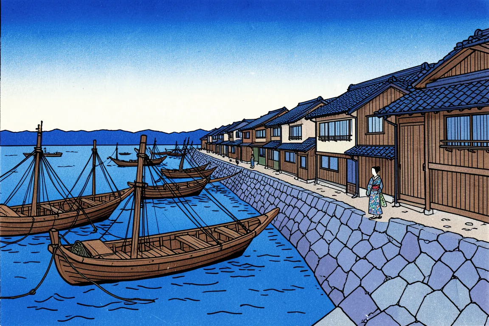

живопись · 1680s–1860s · также: Картины плывущего мира, Эдоская гравюра на дереве, Нисики-э
Японские гравюры на дереве и картины города Эдо: твёрдый чёрный контур, плоские поля цвета, смелое кадрирование и высокая или наклонённая точка зрения. Каждый лист делает команда из художника, резчика и печатника, а издатели продают его массовому рынку.

Главная идея
Картина — печатный лист, где контур, плоский цвет и срезанная точка зрения несут всё, а момент так же мимолётен, как город.
Принципы дизайна
Рисуйте каждую форму чистым контуром одной толщины, 1–2 мм на оттиске 25 см, и заливайте плоским цветом.
Ставьте горизонт высоко или наклоняйте плоскость земли вверх, чтобы картина читалась как многослойная карта, а не как коробка пространства.
Режьте фигуры и предметы краем намеренно: близкая форма переднего плана заполняет 20–40% ширины.
Печатайте небо градацией (бокаси) от глубокого цвета у края до белого у горизонта, полосой 15–25% высоты.
Берите 4–8 плоских цветов и пусть бумага остаётся белой; тень — это узор или линия, а не переход.
Ставьте рамку-картуш с текстом, блок названия и печать-подпись в углу как часть макета.
Заполняйте плоскости ткани, воды и земли повторяющимся узором: волны, линии дождя, мотивы ткани.
Антипаттерны
Лепка тенью с плавным градиентом на фигурах
Падающие тени и линейная перспектива с низким горизонтом
Живописная фактура кисти или видимый холст
Смешение цвета, скрывающее границу между двумя полями
Реалистичная анатомия с лепкой мышц и костей
Центральная симметричная полностью замкнутая композиция